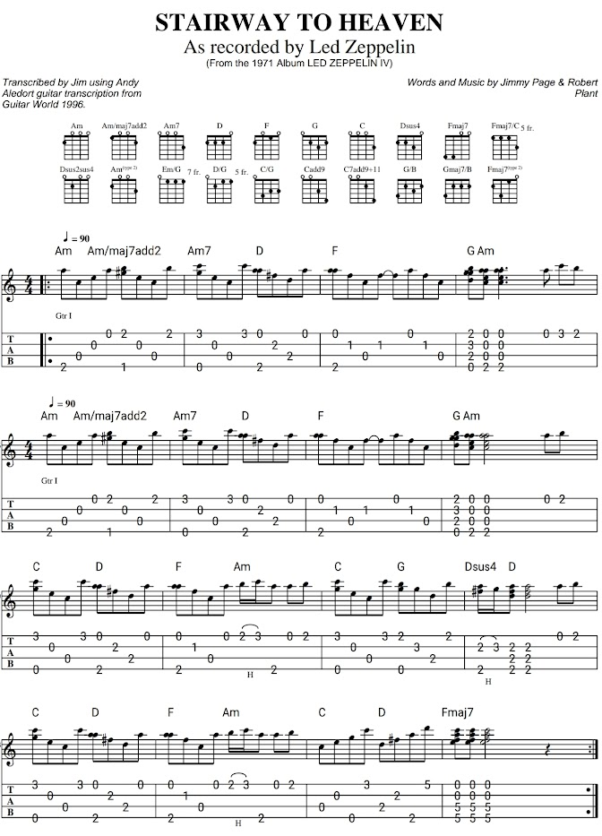

Find the same n on the piano and on two strings. Change its octave and predict the new number.
EXPLORE / PITCH RELATIONSHIPS
Hear the pattern. See the connection.
Press and hold a note to sustain it. Follow its exact pitch across instruments.
f(n) = 440 × 2
n/12
Pitch circles
SELECTED SCALE
C major
OFFSETS FROM TONIC
PREVIOUS → CURRENT
Select a second root to compare.
The circle changes the root. The scale type stays the same.
Try a chord on this root
Magenta outlines identify chord tones. Only cyan scale notes play individually.
PIANO · ONE OCTAVE
C4 → C5
n
above · reduced
n/12
below · note & degree
A4 = 0 · 440.00 Hz
FRETBOARD · SAME PITCH, EVERY POSITION
Guitar
0
Cyan fill
· playable scale tone
4
Magenta outline
· chord tone
Yellow enclosure
·
C4–C5
Exact-pitch match
Headstock left · string 1 on top · each marker is n
Hold a cyan note to sustain. Gray notes remain silent, even inside the yellow region.
A note has one number. C4 is n = −9; A4 is n = 0. An octave adds 12. A fret adds 1. Scale degrees are separate labels relative to the selected tonic.
SPECTRUM / ANALYSIS & TUNING
A string is more than one frequency.
Compare its fundamental, its strongest peak, and its harmonic family.
Tuning pegs
Choose a peg to hear and lock its reference pitch. Press and hold Play target for a sustained tone. Auto matches the nearest open-string pitch.
Live pitch
—
Waiting for a note
n = 12 log₂(f / 440)
FLAT
IN TUNE
SHARP
−50¢
—
+50¢
ESTIMATED FUNDAMENTAL
—
Pluck one open string at a time
LOUDEST SPECTRAL PEAK
—
Not necessarily the fundamental
Ready for a clean pluck
Low-cut filtering and harmonic-aware pitch detection are active. The loudest peak does not have to be the fundamental.
Audio stays in this browser. No recording, upload, or microphone monitoring.
INPUT CLEANUP · BEFORE ANALYSIS
Input cleanup
Waiting for audio
The cutoff stays below the lowest open string in this tuning. A steep high-pass filters both the spectrum and the pitch detector, not the audible reference tones. Measure room noise with strings muted. Choose the correct tuning first. Manual cutoff changes the filter; a note far below this preset’s safe pitch range is flagged rather than forced onto a string.
FREQUENCY DOMAIN
Live spectrum
Filtered spectrum
Raw input (optional)
Target fundamental
Target harmonics
FFT: 8192 samples
MEASURED PARTIALS
Spectral peaks
Waiting for audio.
| Rank | Frequency | Level | Nearest note | n · measured / nearest | Relationship to lower peaks |
|---|---|---|---|---|---|
| Play a note or enable the microphone. | |||||
Near-integer frequency ratios indicate possible harmonic families, not separated sound sources. Missing fundamentals and overlapping partials can be ambiguous. The list uses the filtered signal, excludes weak or unresolved peaks, and pauses with Freeze display.
FREQUENCY × TIME
Scrolling spectrogram
The display shows relative digital level in dBFS, not calibrated sound-pressure level. Octave/pitch estimates can be ambiguous on chords, noisy attacks, or weak fundamentals.
LIBRARY / PLAY & DISCOVER
Music worth exploring.
Classical themes, traditional melodies, chord progressions, and focused technique.
LISTEN FOR
0:00
PLAYABLE TABLATURE
Tablature
Top line = string 1. Click a column to hear it. Fret numbers sit on the strings; small numbers above show duration in beats.
Score reference & arrangement notes
Sixteen written bars, repeated for 32 played bars. The four-line reference is interpreted as high-G ukulele; other tunings use corresponding pitches and suggested fingerings. Hammer-ons are separate attacks and sustain is simplified. This is the opening page, not the entire song.

MATH / THE STRUCTURE OF SOUND
Music, with the variables visible.
One coordinate system. Separate pitch, scale, harmony, and sound.
01
Pitch is exponential. The coordinate is linear.
A4 is always n = 0. It does not move when the scale changes.
f(n) = 440 × 2
n/12
n = 12 log₂(f / 440)
The logarithm reverses the exponent: it asks, “how many octave doublings produce this frequency ratio?” A change of 12 in n doubles frequency. A change of 1 multiplies frequency by 2 1/12 .
Whole octaves + reduced remainder
m = floor(n / 12)
r = n − 12m
n/12 = m + r/12
r = n − 12m
n/12 = m + r/12
The remainder is always 0 ≤ r < 12, then reduced. For negative n, the explicit plus sign matters: −9/12 = −1 + 1/4 , not “negative one and a quarter.”
Reducing the exponent reveals an octave subdivision. It does not turn the frequency multiplier into the same fraction: 2 1/2 = √2, not 1/2.
02
Scales are sets; degrees are positions within them.
A scale selects pitch classes. A chord selects a smaller pattern, not always inside that scale.
C major = {0, 2, 4, 5, 7, 9, 11}
C minor = {0, 2, 3, 5, 7, 8, 10}
C minor = {0, 2, 3, 5, 7, 8, 10}
Those are offsets from C , not the absolute n values. For any tonic n₀, the notes are n = n₀ + s + 12k, with s in the scale set and integer octave shift k. The app keeps n anchored at A4.
Different numbers answer different questions
n:
absolute semitone distance from A4.
Degree:
position in a scale, counting its tonic as 1.
Interval name:
letter span plus quality.
Chord:
a root-relative interval set.
A major triad is {0,4,7}; a minor triad is {0,3,7}. “Minor” means a minor third above its root, not “outside the scale.” Sus2 and sus4 replace the third with 2 or 5 semitones.
No prohibition: scale-lock is a learning feature in Explore. Music can use chromatic notes. The tab player and chord buttons are deliberately not scale-locked.
All subsets, one-note swaps, and the circle
There are 2¹² = 4096 pitch-class subsets, including the empty set; not 4096 named scales. Seven-note subsets number C(12,7) = 792. A one-note exchange removes one included note and adds one excluded note: 7 × 5 = 35 neighbors per seven-note set. These form the Johnson graph J(12,7).
The 12 major collections form a special cycle within that network. Adjacent fifth/fourth roots share six notes, but arbitrary one-note swaps need not produce another major scale. Choosing a tonic adds information a bare set does not contain.
x → (x + d) mod 12
cycle count = gcd(d,12)
cycle length = 12 / gcd(d,12)
cycle count = gcd(d,12)
cycle length = 12 / gcd(d,12)
Other circles are constant-step root orderings, not a promise of one-note scale differences. Fourths (+5) reverse fifths (+7), because 5 ≡ −7 (mod 12).
03
A melody has both pitch intervals and time.
Exact transposition preserves semitone differences. Remapping degrees can change them.
n′ᵢ = nᵢ + t
n′ᵢ₊₁ − n′ᵢ = nᵢ₊₁ − nᵢ
n′ᵢ₊₁ − n′ᵢ = nᵢ₊₁ − nᵢ
The tab player applies this exact transposition to every note, then finds frets for the new pitches. Rhythm is stored separately as beat positions and durations. Whole-octave fitting is explicitly reported and can be disabled. Compact chord voicings are a separate option: they preserve chord pitch classes but may change inversions and octaves. An unplayable exact pitch is flagged, not silently folded.
Same degrees, different intervals
Degrees: 1 → 3 → 5
Major: 0 → 4 → 7
Minor: 0 → 3 → 7
Major: 0 → 4 → 7
Minor: 0 → 3 → 7
A song may still be recognizable after interval changes, but this is a transformation, not exact transposition. A scale exercise conventionally starts on its tonic; a melody can start on any degree.
04
String modes are integer multiples of frequency.
Do not confuse harmonic number h with semitone index n.
f
h
= h f₀
y
h
(x,t) = A sin(hπx/L) cos(2πh f₀t)
f₀ = (1/2L) √(T/μ)
f₀ = (1/2L) √(T/μ)
This is the ideal flexible-string model. Real strings can have inharmonic overtones due to stiffness. Every positive integer h is an allowed ideal harmonic—not just integers whose factors are 2 and 3.
Bring the harmonic back into one octave
r
h
= h / 2
floor(log₂ h)
octave position = log₂(r h )
octave position = log₂(r h )
The first eight harmonics reduce to four distinct ratios: 1, 3/2, 5/4, 7/4. A 6/5 minor third is the ratio between harmonics 6 and 5, not the sixth harmonic reduced by octaves.
The loudest peak may be harmonic 2 or 3. The tuner uses a periodicity estimate for the fundamental and reports the strongest FFT peak separately. Frequency alone cannot uniquely identify the physical string: different strings/frets can produce the same n.
05
Why 12? Compare the approximations.
Factorization controls symmetry. Approximation of logarithms controls tuning error.
j = round(N log₂ r)
r N = 2 j/N
error = 1200 |j/N − log₂ r| cents
r N = 2 j/N
error = 1200 |j/N − log₂ r| cents
One octave is 1200 cents. For the fifth, r = 3/2 and log₂(r) ≈ 0.584963. With N = 12, j = 7 and the fifth is about 1.955 cents flat. There is no universally best N: choose the ratios, weights, and cost of complexity first.
Where the targets land
Cyan ticks = N equal octave steps. Magenta lines = target ratios. Yellow dots = nearest grid step. Only this small comparison plot uses N-EDO; Explore, tabs, and the tuner remain in 12-EDO.
Compare candidate systems
All values are computed in this browser from the displayed ratios. Mean error gives every selected ratio equal weight; it is not a universal measure of musical quality or a perceptual consonance score.
What divisors really tell us—and what they do not
If M divides N, every step of M-EDO lies on the N-EDO grid. Thus 360 contains 12-, 24-, 36- and 72-EDO exactly. It does not contain 19-, 31- or 53-EDO. Refining by an integer factor cannot worsen the nearest-step error for a fixed target; an arbitrary larger grid can improve one ratio and worsen another.
For any N, the nearest-step error is at most 600/N cents. Finer grids eventually make errors small regardless of factorization. Prime N can be excellent approximations. 12 is a compact practical system, not a mathematically optimal universal winner. A complexity penalty such as mean_error + λN depends on your chosen λ.
Why a fifth never lands exactly on a finite equal-octave grid: if 2 j/N = 3/2, raising both sides to N gives 2 j+N = 3 N , impossible by prime factorization. Equal temperament approximates this ratio. Twelve pure fifths almost equal seven octaves, but overshoot by about 23.460 cents. In 12-EDO, twelve seven-semitone fifths close exactly because 12 × 7 = 7 × 12.
Other equal divisions—including 19, 24, 31 and 53—are valid mathematical designs. Musical traditions also use non-equal and context-dependent tuning; a culture should not be reduced to a single equal-division number.
06
A learning path, not a wall of terminology.
Follow the relationships from a single pitch to scales, harmony, and sound.
Compare major and minor. Locate their thirds. Then move C → G and inspect the one-note scale exchange.
Play an arpeggio and a block chord. Transpose a melody. Notice which intervals and rhythms stay fixed.
Turn harmonics on. Compare sine and plucked timbres. Tune one open string, then explore different N in the tuning table.
Next layers: voice leading, harmonic function, rhythm, and form
Voice leading: changing C–E–G into C–F–A moves two voices by 1 and 2 semitones. Inversions reorder chord tones without changing their pitch classes; register and spacing still change the sound.
Harmonic function: in C major, G7 contains B and F. Their movements B→C and F→E help establish C as tonic. Membership alone does not explain the feeling of arrival. The same seven-note set can support different tonal centers or modes.
Rhythm: tempo sets beats per minute; meter groups beats; durations place sounds within that grid. Swing, articulation, dynamics and timing nuance are additional dimensions. The current player uses straight, explicitly timed beats.
Form: repetition, contrast, phrases, and larger-scale organization help listeners recognize a musical idea. Notation, ear training, counterpoint, and musical traditions beyond this model are further subjects for study.
Sources & implementation notes
Formulas and simulations are calculated locally. The following references explain the physical model and browser audio methods; external links open only when you choose them.
UNSW Music Acoustics · strings, standing waves and harmonics ↗ UNSW · how harmonic are harmonics? ↗ Georgia State University · equal temperament ↗ de Cheveigné & Kawahara (2002) · YIN pitch estimator ↗ MDN · Web Audio frequency analysis ↗ MDN · microphone permissions and secure contexts ↗